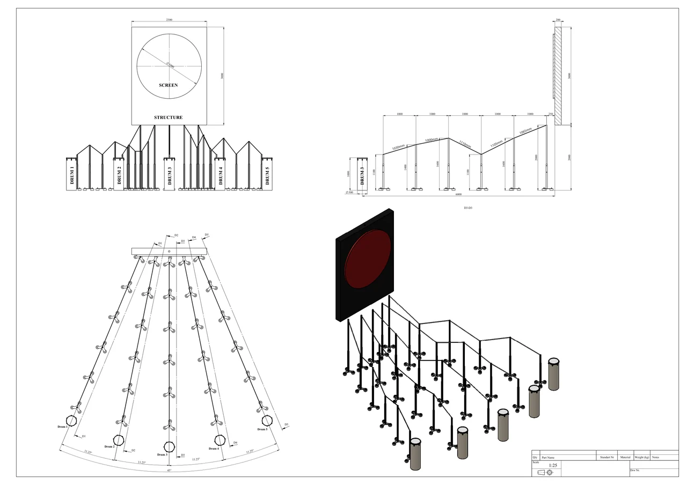
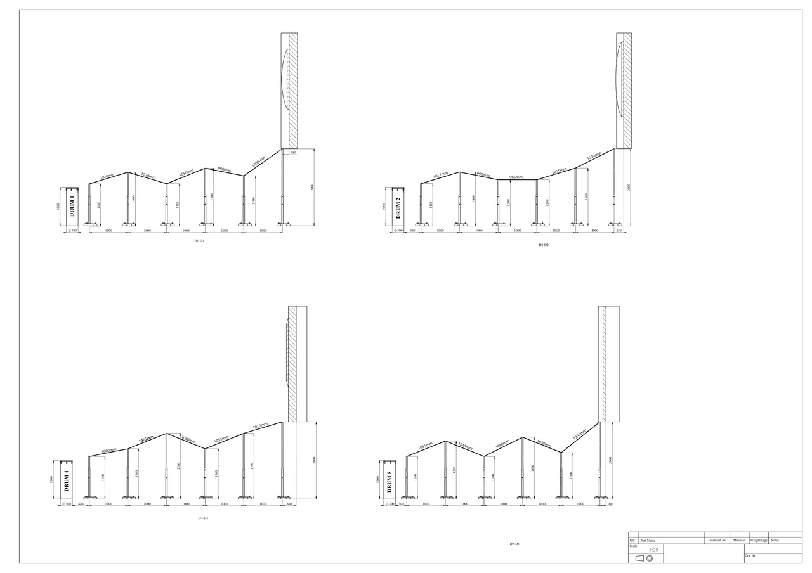

Fan-shaped station plan
The first native artboard includes plan, elevation and axonometric views of the same five-station arrangement.
One shared screen, five distinct stations.
Explore the story
Explain a grouped installation through complementary drawing views.
A fan-shaped plan relates five drums to a circular display. Front, side, perspective and numbered station details describe the same arrangement at different scales.
The first native artboard includes plan, elevation and axonometric views of the same five-station arrangement.
The second native artboard supplies four additional station sections, retained as a complete supporting view.
The main sheet combines a fan-shaped plan with front, side and perspective views of five drum stations.
Explore the complete compositions and interface states. Select any image for a closer look.
02 / PROJECT IMAGES
Select a view to explore.
Dimensioned multi-view drawing of five drum stations arranged in a fan facing a circular wall display.
Complete companion native sections view for a five-station drum installation layout.

Structure, interaction and visual decisions that give the work its character.
RoleContribution awaiting confirmation
AssetsPrivate evidence draft. Individual contribution, implementation and public-use permission remain unverified. Saved source artwork does not establish personal authorship or original modeling. Supplied, licensed, collaborator and AI-assisted components require separate attribution. The source may include supplied CAD or technical drawing work. No engineering, original-geometry or fabrication claim is established.
StatusPrivate native-artwork draft; contribution, implementation and public use unverified